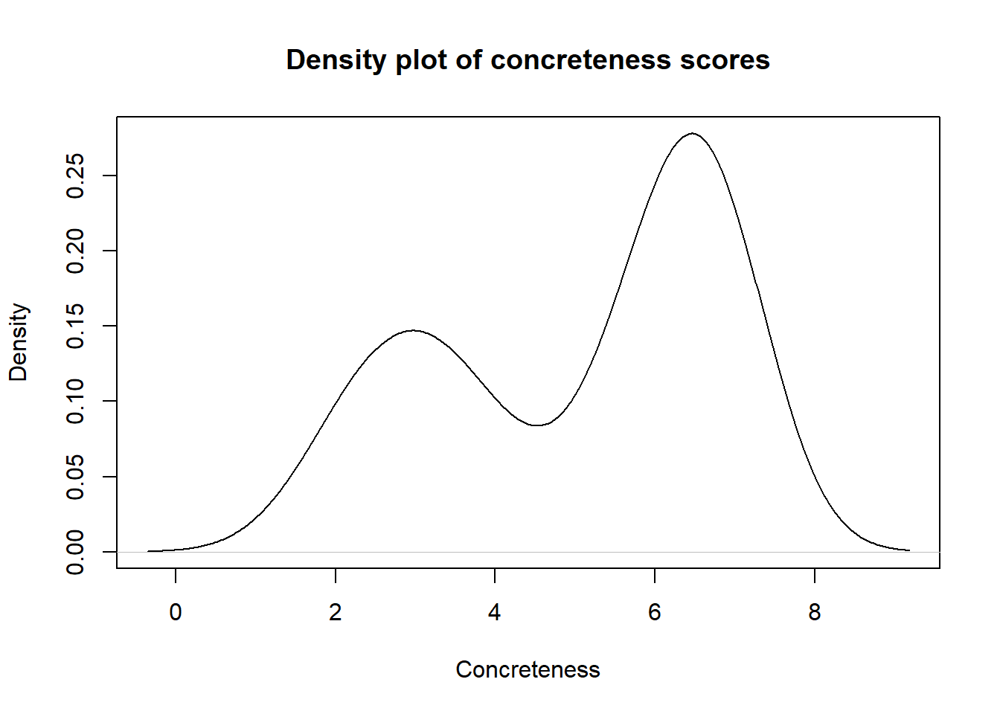

library(ggplot2)Estadística para lingüistas
Pruebas paramétricas y no paramétricas
1. Comparación de dos grupos
Comparar medidas de tendencia central de dos grupos
Confirmar o falsear hipótesis basadas en dos variables
Para realizar una comparación es necesario usar una prueba o test
- Pruebas dependientes (datos emparejados)
- Pruebas independientes (datos no emparejados)
- Las pruebas pueden ser de una cola o de dos colas
1.1 Condiciones para aplicar una prueba t independiente:
- Las muestras deben haber sido seleccionadas de manera aleatoria de la población que representan.
- Las observaciones deben ser independientes a nivel inter e intragrupal.
- Las variables son de intervalo o razón (cuantitativas).
- La distribución de los datos debe ser normal o superar las 30 observaciones.
- Las varianzas deben ser homogéneas.
1.2 Condiciones para aplicar una prueba t dependiente
- Las muestras deben haber sido seleccionadas de manera aleatoria de la población que representan.
- Las observaciones deben ser independientes a nivel inter e intragrupal.
- Las variables son de intervalo o razón (cuantitativas).
- Las diferencias entre observaciones (apareadas) deben tener una distribución normal o superar las 30 observaciones.
- Las varianzas deben ser homogéneas.
1.3 Condiciones para aplicar una prueba no paramétrica (Wilcoxon o Matt-Whitney)
- Las muestras deben haber sido seleccionadas de manera aleatoria de la población que representan.
- Las observaciones deben ser independientes a nivel inter e intragrupal.
- Las variables son al menos de tipo ordinal.
- Las varianzas deben ser homogéneas.
2. Prueba t
load("/Users/scien/OneDrive/Clases/EstadísticaparaLingüistas/tablas/Rling_workspace.RData")2.1 Variables
syl: número de sílabaslet: número de letrasimag: grado de abstracción (1 a 7)conc: grado de concreción (1 a 7)associ: número de asociaciones
data(pym_high)Warning in data(pym_high): data set 'pym_high' not founddata(pym_low)Warning in data(pym_low): data set 'pym_low' not foundsummary(pym_high) syl let imag conc assoc
Min. :1.00 Min. : 4.00 Min. :2.770 Min. :1.830 Min. :4.88
1st Qu.:1.00 1st Qu.: 5.00 1st Qu.:4.100 1st Qu.:3.203 1st Qu.:5.69
Median :2.00 Median : 6.00 Median :5.050 Median :5.850 Median :6.24
Mean :1.78 Mean : 5.82 Mean :5.171 Mean :5.074 Mean :6.38
3rd Qu.:2.00 3rd Qu.: 7.00 3rd Qu.:6.353 3rd Qu.:6.590 3rd Qu.:7.16
Max. :5.00 Max. :10.00 Max. :6.870 Max. :7.000 Max. :9.12 str(pym_high); str(pym_low)'data.frame': 50 obs. of 5 variables:
$ syl : int 1 1 1 1 1 1 2 1 5 2 ...
$ let : int 4 4 4 6 4 4 7 4 10 8 ...
$ imag : num 4.13 4.07 6.5 6.63 3.03 6.6 6.2 6.87 6.53 4.1 ...
$ conc : num 2.47 2.96 6.25 6.59 2.6 7 6.38 6.83 5.87 3.63 ...
$ assoc: num 7 6.78 6.88 7.52 5.88 7.96 7.28 5.12 7.2 5.8 ...'data.frame': 51 obs. of 5 variables:
$ syl : int 1 1 4 2 4 1 3 2 3 5 ...
$ let : int 3 3 10 6 9 6 6 6 9 12 ...
$ imag : num 6.57 5.97 2.4 6.43 3.57 6.53 6.5 3.43 6.37 3.2 ...
$ conc : num 6.93 6.62 2.25 6.69 2.92 6.59 7 2.99 6.59 2.49 ...
$ assoc: num 5.32 6.04 5.36 8 5.92 6.88 7.13 5.33 5.92 5.2 ...summary(pym_low) syl let imag conc
Min. :1.000 Min. : 3.000 Min. :1.830 Min. :1.730
1st Qu.:2.000 1st Qu.: 6.000 1st Qu.:3.600 1st Qu.:2.740
Median :2.000 Median : 7.000 Median :5.230 Median :4.850
Mean :2.529 Mean : 7.098 Mean :4.885 Mean :4.728
3rd Qu.:3.000 3rd Qu.: 9.000 3rd Qu.:6.165 3rd Qu.:6.620
Max. :5.000 Max. :14.000 Max. :6.570 Max. :7.000
assoc
Min. :3.000
1st Qu.:5.345
Median :5.920
Mean :5.857
3rd Qu.:6.460
Max. :8.000 2.2 Hipótesis
Las palabras con alta frecuencia de ocurrencia presentan un número mayor de asociaciones que las palabras con baja frecuencia de ocurrencia.
boxplot(pym_high$assoc, pym_low$assoc, names = c("Alta frecuencia", "Baja frecuencia"), main = "Número de asociaciones por tipo de palabra", xlab = "Grupo", ylab = "Promedio del número de asociaciones")boxplot.stats(pym_low$assoc)$out[1] 3pym_low[pym_low$assoc == 3, ] syl let imag conc assoc
criterion 4 9 1.83 1.93 32.3 Tipo de test
- ¿Dependiente o independiente?
- ¿Una cola o dos colas?
- ¿Cumple con todas las condiciones?
Hipótesis nula: No hay diferencias entre grupos
t.test(pym_high$assoc, pym_low$assoc, alternative = "greater") # doble cola alternative="two.sided"
Welch Two Sample t-test
data: pym_high$assoc and pym_low$assoc
t = 2.6717, df = 98.281, p-value = 0.004417
alternative hypothesis: true difference in means is greater than 0
95 percent confidence interval:
0.1977777 Inf
sample estimates:
mean of x mean of y
6.380000 5.857451 El valor de p-value = 0.004417indica que las diferencias son significativas. Para una hipótesis alternativa negativa:
t.test(pym_low$assoc, pym_high$assoc, alternative = "less")
Welch Two Sample t-test
data: pym_low$assoc and pym_high$assoc
t = -2.6717, df = 98.281, p-value = 0.004417
alternative hypothesis: true difference in means is less than 0
95 percent confidence interval:
-Inf -0.1977777
sample estimates:
mean of x mean of y
5.857451 6.380000 El valor de p-value = 0.004417indica que las diferencias son significativas.
2.4 Intervalo de confianza
Significa que el intervalo tiene un 95% de probabilidad de incluir la media de la población
Identifica un rango de valores con el 95 % de probabilidad de incluir un valor verdadero (la media) de la población (Gries,2013, p.134)
\(CI = \bar{x} \pm t * ES\)
Paso 1: calcular el error estándard
\(SE_{\bar{x}}= \frac{s}{\sqrt[]{n}}\)
Para calcular el error estándar necesitamos conocer el valor de la desviación típica:
sd(pym_high$assoc)[1] 0.9299967También necesitamos saber el número de casos u observaciones de la variable que estamos analizando:
length(pym_high$assoc)[1] 50\(SE_{\bar{x}}= \frac{0.92}{\sqrt[]{50}}\)
\(SE_{\bar{x}}=1.314286\)
se.high <- sd(pym_high$assoc)/sqrt(length(pym_high$assoc))
se.high[1] 0.1315214Paso 2: calcular el intervalo de confianza 95%
\(CI= \bar{x} \pm 1.96 * SE\)
La constante de 1.96 corresponde a un umbral de significancia del 0.05% para una distribución normal con una media de 0 y una DE de 1.
Se calcula el límite inferior del Intervalo de confianza para las palabras con alta frecuencia:
límiteInf.high <- mean(pym_high$assoc) - 1.96*se.high
límiteInf.high[1] 6.122218Se calcula el límite superior del Intervalo de Confianza para las palabras con alta frecuencia:
límiteSup.high <- mean(pym_high$assoc) + 1.96*se.high
límiteSup.high[1] 6.637782Se repite el procedimiento con las palabras de baja frecuencia
Error típico o estándard
se.low <- sd(pym_low$assoc)/sqrt(length(pym_low$assoc))
se.low[1] 0.1447616Intervalos de confianza
Se calcula el límite inferior del Intervalo de Confianza para las palabras con baja frecuencia:
límiteInf.low <- mean(pym_low$assoc) - 1.96*se.low
límiteInf.low[1] 5.573718Se calcula el límite superior del Intervalo de Confianza para las palabras con baja frecuencia:
límiteSup.low <- mean(pym_low$assoc) + 1.96*se.low
límiteSup.low[1] 6.141184Diagrama con intervalos de confianza
Agrupamos los valores medios, los cuales vamos a representar en diagramas de barra.
medias <- c(mean(pym_high$assoc), mean(pym_low$assoc))
medias[1] 6.380000 5.857451Agrupamos los límites inferiores de cada grupo:
ci.limiteInferior <- c(límiteInf.high, límiteInf.low)
ci.limiteInferior[1] 6.122218 5.573718ci.limiteSuperior <- c(límiteSup.high, límiteSup.low)
ci.limiteSuperior [1] 6.637782 6.141184Diagramar media y intervalo de confianza
Agupamos en una tabla los valores obtenidos en el paso anterior:
assoc.intervalos <- data.frame(grupos = c("High", "Low"), media = medias, se = c(se.high, se.low))
assoc.intervalos grupos media se
1 High 6.380000 0.1315214
2 Low 5.857451 0.1447616Ahora diagramamos:
ggplot(assoc.intervalos, aes(x=grupos, y=media)) + geom_bar(stat="identity", fill="lightblue", colour = "black") + geom_errorbar(aes(ymin= media-1.96*se, ymax=media+1.96*se), width=0.2) + labs(title =" Intervalos de confianza", x = "Frecuencia de aparición", y = "Promedio del número de asociaciones")3. Comparando grupos con distribución no normal con la prueba de Wilcoxon
3.1 Variables e hipótesis
Variable: Grado de concreción de la palabra (concreteness)
## Las palabras frecuencia de ocurrencia alta y baja presentan valores diferentes en cada parámetro.
data(pym_high)Warning in data(pym_high): data set 'pym_high' not founddata(pym_low)Warning in data(pym_low): data set 'pym_low' not foundsummary(pym_high$conc) Min. 1st Qu. Median Mean 3rd Qu. Max.
1.830 3.203 5.850 5.074 6.590 7.000 summary(pym_low$conc) Min. 1st Qu. Median Mean 3rd Qu. Max.
1.730 2.740 4.850 4.728 6.620 7.000 summary(pym_high$conc) Min. 1st Qu. Median Mean 3rd Qu. Max.
1.830 3.203 5.850 5.074 6.590 7.000 qqnorm(pym_high$conc, main = "Q-Q plot del grado de concreción")
qqline(pym_high$conc)plot(density(pym_high$conc), main = "Density plot of concreteness scores", xlab = "Concreteness")
Confirmamos la no normalidad
Hipotesis nula del test de shapiro: la distribución es normal
shapiro.test(pym_high$conc)
Shapiro-Wilk normality test
data: pym_high$conc
W = 0.8468, p-value = 1.269e-05shapiro.test(pym_low$conc)
Shapiro-Wilk normality test
data: pym_low$conc
W = 0.85526, p-value = 1.827e-053.3 ¿Qué tipo de prueba usar?
wilcox.test(pym_high$conc, pym_low$conc, correct = FALSE, conf.int = TRUE)
Wilcoxon rank sum test
data: pym_high$conc and pym_low$conc
W = 1380, p-value = 0.4757
alternative hypothesis: true location shift is not equal to 0
95 percent confidence interval:
-0.2699598 0.7700643
sample estimates:
difference in location
0.1599588 # correct= FALSE cancela una corrección y conf.int= TRUE indica que se usa el 95% de intervalo de confianza4. Comparando datos dependientes con distribución normal
4.1 Condiciones de aplicación de la prueba
- Las muestras deben haber sido seleccionadas de manera aleatoria de la población que representan.
- Las variables son de intervalo o razón (cuantitativas).
- Las diferencias entre observaciones (apareadas) deben tener una distribución normal o superar las 30 observaciones.
- Las varianzas deben ser homogéneas.
4.2 Variables e hipótesis
Variable: Número de asociaciones (assoc)
Los hablantes nativos presentan mayor número de asociaciones que los hablantes no nativos.
Datos de las palabras con alta frecuencia
data(pym_high)# vamos a tomarlos como los datos de los hablantes nativosWarning in data(pym_high): data set 'pym_high' not foundstr(pym_high$assoc) num [1:50] 7 6.78 6.88 7.52 5.88 7.96 7.28 5.12 7.2 5.8 ...Datos creados ad hoc
diff <- rnorm(50, -1.35, 1.27)#casos+media+desviación
head(diff)[1] 0.435574461 -1.242874708 -2.018944967 -0.961520896 -0.898438414
[6] 0.004005931nn <- pym_high$assoc + diff #Creamos los datos sobre los hablantes no nativos
head(nn)[1] 7.435574 5.537125 4.861055 6.558479 4.981562 7.964006nn <- round(nn, 2) # redondeamos los datos a dos decimales
head(nn)[1] 7.44 5.54 4.86 6.56 4.98 7.96Se confirma la normalidad
shapiro.test(diff)
Shapiro-Wilk normality test
data: diff
W = 0.98751, p-value = 0.8719Prueba dependiente
t.test(pym_high$assoc, nn, alternative = "greater", paired = TRUE)
Paired t-test
data: pym_high$assoc and nn
t = 6.5211, df = 49, p-value = 1.831e-08
alternative hypothesis: true mean difference is greater than 0
95 percent confidence interval:
0.9642915 Inf
sample estimates:
mean difference
1.298 Referencias
Levshina, Natalia. 2015. How to Do Linguistics with R: Data exploration and statistical analysis. Amsterdam: John Benjamins. Capítulo 5, pp. 87-113.